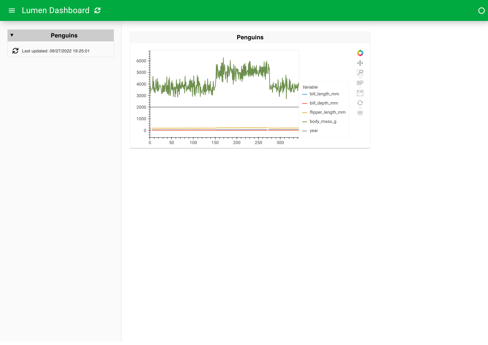

Building a Dashboard with YAML¶
Build a complete Lumen dashboard using YAML specifications. This tutorial creates an interactive penguin data explorer with filters and multiple visualizations.
Final result¶

Time: 15 minutes
What you'll build¶
An interactive dashboard with filtering, multiple chart types, and responsive layout. The tutorial follows nine steps:
- Create a YAML file - Set up the specification
- Add a data source - Load the Palmer Penguins dataset
- Add a table view - Display raw data
- Create a plot - Basic visualization
- Configure a scatter plot - Specific axes and colors
- Add filters and transforms - Interactive filtering and column selection
- Add multiple views - Histogram and table alongside scatter plot
- Improve the layout - Responsive sizing and positioning
- Add title and theme - Final polish
Each step shows the YAML code and resulting output.
Prerequisites¶
Install Lumen:
Why YAML specs?
Lumen AI generates these specs automatically through conversation. Learn specs to:
- Customize AI outputs
- Version control dashboards
- Understand how Lumen works
- Access features not yet in AI
Prefer AI? See Using Lumen AI instead.
1. Create a YAML file¶
Create penguins.yaml in your text editor.
Time: 30 seconds
2. Add a data source¶
Load the Palmer Penguins dataset:
| penguins.yaml | |
|---|---|
- Source name - reference this in layouts
- File type handles CSV, Parquet, JSON
- Remote URL or local file path
Launch the dashboard:
The --autoreload flag refreshes automatically when you save changes.
Your browser opens, but the dashboard is empty—you haven't added views yet.
Time: 2 minutes
3. Add a table view¶
Display the raw data:
| penguins.yaml | |
|---|---|

The table shows all columns. Note the column names for later plots.
Time: 3 minutes
4. Create a plot¶
Replace the table with a plot:
sources:
penguin_source:
type: file
tables:
penguin_table: https://datasets.holoviz.org/penguins/v1/penguins.csv
layouts:
- title: Penguins
source: penguin_source
views:
- type: hvplot # (1)!
table: penguin_table
- hvPlot automatically chooses visualization

This default plot shows too much. Let's make it specific.
Time: 4 minutes
5. Configure a scatter plot¶
Create a scatter plot with specific axes:
sources:
penguin_source:
type: file
tables:
penguin_table: https://datasets.holoviz.org/penguins/v1/penguins.csv
layouts:
- title: Penguins
source: penguin_source
views:
- type: hvplot
table: penguin_table
kind: scatter # (1)!
x: bill_length_mm # (2)!
y: bill_depth_mm
color: species # (3)!
- Scatter plot type
- X and Y axes from table columns
- Color points by species

Now you see the relationship between bill length and depth, colored by species.
Time: 6 minutes
6. Add filters and transforms¶
Add interactive filters and select columns:
- Pipelines connect sources to views with filters and transforms
- Widget filters create interactive dropdowns
- Column transform selects specific columns
- Reference pipeline instead of source

Users can now filter by sex and island using sidebar widgets.
Time: 8 minutes
7. Add multiple views¶
Add histogram and table views:
sources:
penguin_source:
type: file
tables:
penguin_table: https://datasets.holoviz.org/penguins/v1/penguins.csv
pipelines:
penguin_pipeline:
source: penguin_source
table: penguin_table
filters:
- type: widget
field: sex
- type: widget
field: island
transforms:
- type: columns
columns: ['species', 'island', 'sex', 'year',
'bill_length_mm', 'bill_depth_mm']
layouts:
- title: Penguins
pipeline: penguin_pipeline
views:
- type: hvplot
x: bill_length_mm
y: bill_depth_mm
kind: scatter
color: species
- type: hvplot
kind: hist
y: bill_length_mm
- type: table
show_index: false

All three views update when you change filters.
Time: 10 minutes
8. Improve the layout¶
Configure positioning and sizing:
sources:
penguin_source:
type: file
tables:
penguin_table: https://datasets.holoviz.org/penguins/v1/penguins.csv
pipelines:
penguin_pipeline:
source: penguin_source
table: penguin_table
filters:
- type: widget
field: sex
- type: widget
field: island
transforms:
- type: columns
columns: ['species', 'island', 'sex', 'year',
'bill_length_mm', 'bill_depth_mm']
layouts:
- title: Penguins
pipeline: penguin_pipeline
layout: [[0], [1, 2]] # (1)!
sizing_mode: stretch_width # (2)!
height: 800
views:
- type: hvplot
x: bill_length_mm
y: bill_depth_mm
kind: scatter
color: species
responsive: true # (3)!
height: 400
- type: hvplot
kind: hist
y: bill_length_mm
responsive: true
height: 300
- type: table
show_index: false
height: 300
- Scatter on top row, histogram and table side-by-side on bottom
- Views expand to fill width
- Plots resize with browser window

Time: 12 minutes
9. Add title and theme¶
Final polish:
config:
title: Palmer Penguins
theme: dark # (1)!
sources:
penguin_source:
type: file
tables:
penguin_table: https://datasets.holoviz.org/penguins/v1/penguins.csv
pipelines:
penguin_pipeline:
source: penguin_source
table: penguin_table
filters:
- type: widget
field: sex
- type: widget
field: island
transforms:
- type: columns
columns: ['species', 'island', 'sex', 'year',
'bill_length_mm', 'bill_depth_mm']
layouts:
- title: Penguins
pipeline: penguin_pipeline
layout: [[0], [1, 2]]
sizing_mode: stretch_width
height: 800
views:
- type: hvplot
x: bill_length_mm
y: bill_depth_mm
kind: scatter
color: species
responsive: true
height: 400
- type: hvplot
kind: hist
y: bill_length_mm
responsive: true
height: 300
- type: table
show_index: false
height: 300
theme: midnight
- Dark theme for the entire dashboard
🎉 Done! You've built a complete interactive dashboard.
Total time: 15 minutes
What you learned¶
- Create YAML specifications
- Load data from remote sources
- Add interactive filters
- Create multiple visualization types
- Configure responsive layouts
- Apply themes and styling
Next steps¶
Learn the system:
- Core Concepts - Understand sources, pipelines, views
- Sources Guide - Load from databases and APIs
- Pipelines Guide - All filters and transforms
- Views Guide - All visualization types
Try these challenges:
- 📊 Replace histogram with box plot (
kind: box) - 🎨 Color scatter by different field
- 🔍 Add year filter
- 📥 Enable downloads (see Downloads guide)